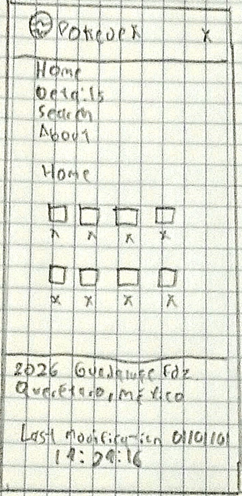
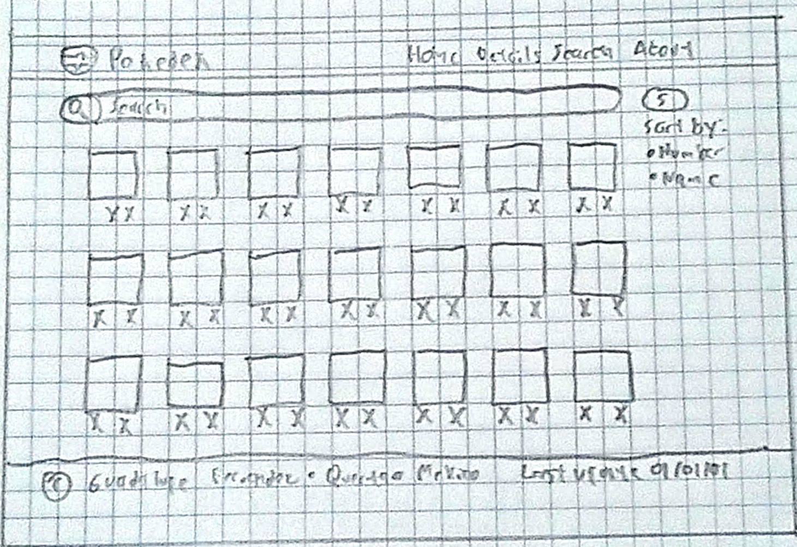

1. Site Name
Pokeapi
The name "Pokeapi" is the iconic digital encyclopedia from the Pokémon franchise that catalogs all known Pokémon species. It is instantly recognizable to fans of the franchise and clearly communicates the purpose of the site: to browse, search, and explore information about Pokémon. The name is short, memorable, and directly tied to the content.
Optional domain availability: mypokedex.app
2. Site Purpose
The Pokedex website serves as an interactive digital encyclopedia for Pokémon fans. It provides a browsable and searchable catalog of Pokémon using the PokéAPI. Users can explore Pokémon by their National Dex number, view detailed information such as types, abilities, stats, and sprites, and filter or search for specific Pokémon. The site aims to be a fast, accessible, and visually appealing reference tool for both casual fans and competitive players.
The site will include four pages:
- Home / Pokeapi: A grid of all Pokémon with a search bar and type filters.
- Pokémon Detail: A dedicated page for each Pokémon showing stats, types, abilities, and evolution chain.
- Search: Search page with advanced filtering options.
- About: Information about the project, the PokéAPI, and credits.
3. Scenarios
Scenario 1
"I'm a new Pokémon fan and I want to learn about the first generation of Pokémon. How can I browse through them easily and see their basic information like type and number?"
Answer: The home page displays all Pokémon in a responsive grid organized by their National Dex number. Users can scroll through the list or use the search bar to find a specific Pokémon by name or number.
Scenario 2
"I'm building a competitive team and I need to know the base stats and abilities of Charizard. Where can I find that detailed information?"
Answer: By clicking on any Pokémon card in the grid, the user is taken to the Pokémon detail page, which displays base stats (HP, Attack, Defense, Special Attack, Special Defense, Speed), abilities, types, and a visual stat chart.
Scenario 3
"I only want to see Fire-type Pokémon. Is there a way to filter the list?"
Answer: The home page includes a type filter bar that allows users to select one or more types (e.g., Fire, Water, Grass) and instantly filter the displayed Pokémon grid.
4. Color Scheme
The color palette is inspired by the classic Pokédex device and the official Pokémon branding. It uses a bold primary color for the header, clean neutrals for content areas, and accent colors for Pokémon type badges.
#1A237E — Deep Indigo Blue
Used for the header background, footer background, and primary navigation elements. Provides strong brand identity and contrast.
#FFFFFF — White
Used for the main page background, card backgrounds, and text on dark backgrounds. Ensures readability and a clean layout.
#F0F0F0 — Light Gray
Used for card backgrounds in the Pokémon grid and subtle section backgrounds. Provides visual separation without being distracting.
#E53935 — Pokédex Red
Used for accent elements such as buttons, hover states, the search icon, and the Fire-type badge. Adds energy and draws attention to interactive elements.
#212121 — Near Black
Used for body text and headings on light backgrounds. Provides excellent readability and contrast.
5. Typography
Two fonts are selected for this project to balance readability with a modern, playful feel appropriate for a Pokémon-themed site.
Poppins
Usage: Headings (h1, h2, h3) and the site logo/title in the header.
Why: Poppins is a geometric sans-serif font with a friendly, modern feel. Its bold weights work well for titles and give the site a playful yet professional look that fits the Pokémon theme.
ABCDEF 123456 — Poppins Bold
Inter
Usage: Body text, paragraphs, navigation links, card labels, and UI elements.
Why: Inter is designed for computer screens with excellent readability at small sizes. It is clean, neutral, and highly legible, making it perfect for body content and data-heavy sections like stat tables.
ABCDEF 123456 — Inter Regular
6. Wireframe
Below are the wireframe sketches for the home page (Pokedex grid) in both small (mobile) and large (desktop/tablet) viewport sizes. These are hand-drawn sketches photographed and embedded in the document.
Small Viewport (Mobile)

Figure 1: Mobile wireframe — single column layout with header, search bar, and vertically stacked Pokémon cards.
Large Viewport (Desktop/Tablet)

Figure 2: Desktop wireframe — multi-column grid layout with header, full-width search bar, and a responsive grid of Pokémon cards (3-4 columns).
Note: The wireframes show the structural layout without colors, images, or detailed styling. The header contains the site title and search bar. The main content area displays Pokémon cards in a responsive grid. On mobile, cards stack in a single column; on desktop, they arrange in multiple columns.